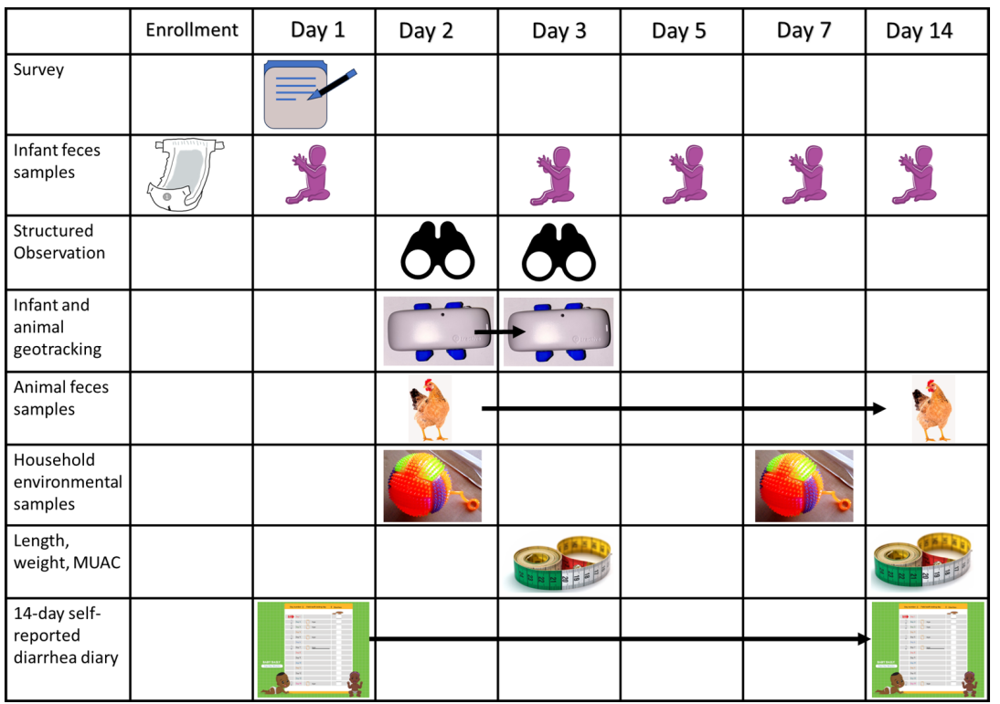

Study Design

| STUDY DESIGN | RATIONALE |
|---|---|
| Recruit from neighborhoods representing low to moderate levels of societal development to test counterfactual hypotheses that high thresholds of basic development can reduce pathogen transmission. | The rapid growth in middle-class urban households in LMICs globally can be leveraged to compare enteric pathogen exposure and health patterns across a socioeconomic developmental spectrum to identify the conditions that most influence enteric disease transmission. While increases in household socioeconomic status are known to decrease the risk of pediatric diarrhea in LMICs, most studies have been based in low-income populations. Evidence from middle class neighborhoods testing are critical for identifying tipping points in transmission and accurately predicting potential program impact on health outcomes. |
| Apply a One Health approach that includes zoonotic and environmental health to identify all sources of pathogen transmission. | Domestic and sylvatic animals are susceptible to infection from many of the same enteric pathogens and may have more widespread carriage than humans due to less frequent disease surveillance and treatment. Keeping animals for food, pest control, and companionship are common practices in most urban and peri-urban LMICs settings and these animals are also often allowed to freely roam and forage for food in household and neighborhood areas which can spread feces with pathogens across the environment. These animals may be particularly important in sustaining endemic enteric disease burden or in disease spillover because of the higher frequency of contact with humans . Improvements in sanitation coverage does not reduce animal feces pollution in the environment so data collection on safe feces management must account for infection prevalence in animals, animal hygiene practices, and human-animal contact. |
| Rely upon a microbial ecology approach to detect pathogen diversity at the human-environment-animal interface to identify pathogen sources and transmission dynamics. | Studies in urban Kenya and elsewhere have demonstrated taxonomic diversity in enteric pathogens in humans, animals, and environment in areas where open defecation, dumping of untreated sewage, and unsanitary animal management practices are common. Taxonomic diversity varies by exposure pathway, and multi-pathogen exposure risks may be elevated in infants living in underdeveloped houses with dirt floors, shared latrines, and domestic animals. Evidence on pathogen diversity in middle-class neighborhoods is unknown, although theoretically should be low if moderate to high thresholds of neighborhood infrastructure and hygiene have been met. Identifying intervention strategies that best reduce multi-pathogen transmission could improve investment in high impact developmental and public health programs. |
| Use a community-based enrollment design and objective measures of pathogen presence or absence to detect transmission dynamics that are unconfounded by host type, health status, and health care utilization behaviors | Reliance upon diarrhea symptoms as an indicator of exposure can lead to biased study designs that presume health care seeking cases are exposed while asymptomatic controls are presumed unexposed. The relationships between ingestion of a pathogen, gut infection, and progression to symptomatic status are influenced by many factors, such as type of pathogen, infectious dose, host immunity, co-morbidities, and breastfeeding. Asymptomatic carriage of enteric pathogens is common in endemic areas, and these individuals can still pose a transmission risk to others, but typically go undetected due to lack of symptoms. Evidence from cities in the United States in the 1930s and 1940 suggests that city development decreased both symptomatic and asymptomatic Shigella infections. Combining community-based sampling with objective measures of pathogen presence in infants, animals, and environmental samples avoids misclassification of exposed asymptomatic subjects as unexposed. |
| Enroll children between 0 to 12 months of age to improve detection of transmission dynamics | A high pre-existing pathogen detection prevalence makes it more challenging to distinguish between persistent or pre-existing infections versus new infections and increases the chances that pathogen detection in children is confounded by pre-existing host immunity or disease conditions. Large studies of enteric pathogen detection in under- five children consistently show that detection and co-detection of enteric pathogens in endemic areas climbs rapidly within the first months of life. Recruitment of children between birth and twelve months leverages the dynamic increases in prevalence rate in this age group for identifying early causes of population disease transmission. |
| Use a short-cohort, repeat measures design that matches a natural timeline of exposure and infection to improve detection of transmission dynamics | For most enteric pathogens, the timeline between known exposure and confirmed infection is between 1 to 5 days. The timeline between infection and recovery varies from a few days to a few weeks. Pathogen carriage and diarrhea lasting more than 14 days is considered persistent and unusual. A cohort study that spaces human health assessment by 30 days or more cannot detect exposure-outcome relationships or confirm that concurrent pathogen detections over a month or more are persistent carriage versus new exposure events. Given known temporal pathogen-host disease trends, the dynamic rate of infections in infants in Kenya, and the evidence of widespread pathogen contamination in low-income urban neighborhoods, a 14-day short cohort design with repeat diagnostic testing for enteric pathogens in infants could detect transmission events and monitor their progression. Assessing pathogen presence in infants at enrollment can improve screening for post-enrollment pathogen exposures. |
| Apply a Planetary Health approach to characterize household and community socio-economic and infrastructure development on enteric pathogen transmission | Natural societal development involves improvements in many living conditions that are inherently correlated, like water and sanitation access, flooring, ability to buy safer foods and soap for handwashing, and possibly changes in zoonotic exposures. The rate with which households and neighborhood improve their circumstances can vary creating spatial variability in when and where hygiene conditions are achieved. If human and animal feces containing enteric pathogens are discarded in drains or lots in the neighborhood, it can be carried by human and animal foot traffic or flood water into the home impacting household hygiene conditions and exposure of children. Children also can be exposed to neighborhood soil, water, objects, and animal feces containing enteric pathogens during play or movement in residential environments outside the household. Understanding how changes in socio-economic and built environment conditions influence population health dynamics in the present could improve the future sustainability and health effectiveness of urban planning policies. In the context of enteric disease control, evidence is needed on how household and community development and the spatial exposures of infants influences the collapse of enteric pathogen transmission. |
Back to top